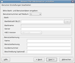

AqBanking
Archivierte Anleitung
Dieser Artikel wurde archiviert, da er - oder Teile daraus - nur noch unter einer älteren Ubuntu-Version nutzbar ist. Diese Anleitung wird vom Wiki-Team weder auf Richtigkeit überprüft noch anderweitig gepflegt. Zusätzlich wurde der Artikel für weitere Änderungen gesperrt.
Zum Verständnis dieses Artikels sind folgende Seiten hilfreich:
AqBanking  ist eine quelloffene Bibliothek, die Online-Banking-Funktionen anbietet. Das Modul AqHBCI implementiert das deutsche HBCI-Protokoll . AqBanking selbst ist kein eigenständiges Finanzverwaltungsprogramm, es gibt jedoch viele Client-Programme, die auf die AqBanking-Bibliothek zugreifen.
ist eine quelloffene Bibliothek, die Online-Banking-Funktionen anbietet. Das Modul AqHBCI implementiert das deutsche HBCI-Protokoll . AqBanking selbst ist kein eigenständiges Finanzverwaltungsprogramm, es gibt jedoch viele Client-Programme, die auf die AqBanking-Bibliothek zugreifen.
Folgende Programme setzen AqBanking ein:
Installation¶
Es müssen folgende Pakete installiert [1] werden:
aqbanking-tools (universe, Konfigurationsprogramm für die Kommandozeile )
libaqbanking-plugins-libgwenhywfar60 (universe, Wichtige Plugins (u.a. für PIN/TAN Anmeldung) )
aqbanking-tools (universe, Konfigurationsprogramm für die Kommandozeile )
libchipcard6 (universe, Chipcard-Server für den Zugang mit HBCI-Chipkarten.)
 mit apturl
mit apturl
Paketliste zum Kopieren:
sudo apt-get install aqbanking-tools libaqbanking-plugins-libgwenhywfar60 aqbanking-tools libchipcard6
sudo aptitude install aqbanking-tools libaqbanking-plugins-libgwenhywfar60 aqbanking-tools libchipcard6
Es gibt noch einige Module, die aber als Abhängigkeiten mitinstalliert werden oder bereits in anderen Pakete enthalten sind:
libaqhbci20 (universe) - HBCI-Modul -
libchipcard-data (universe) - Konfigurationsdateien für den Zugang mit eine HBCI Chipkarte.
Je nach verwendeter Ubuntu-Version müssen noch die folgenden Pakete installiert [1] werden:
Ubuntu 12.04¶
libaqbanking33 (universe, Online-Banking-Bibliothek. Das DTAUS-Modul ist in diesem Paket enthalten und im Paket.)
libaqbanking33-plugins (universe)
mit apturl
Paketliste zum Kopieren:
sudo apt-get install libaqbanking33 libaqbanking33-plugins
sudo aptitude install libaqbanking33 libaqbanking33-plugins
Ab Ubuntu 12.10¶
libaqbanking34 (universe, Online-Banking-Bibliothek. Das DTAUS-Modul ist in diesem Paket enthalten und im Paket.)
libaqbanking34-plugins (universe)
mit apturl
Paketliste zum Kopieren:
sudo apt-get install libaqbanking34 libaqbanking34-plugins
sudo aptitude install libaqbanking34 libaqbanking34-plugins
Dokumentation¶
Die Dokumentation kann noch optional installiert werden:
libaqbanking-doc (universe)
mit apturl
Paketliste zum Kopieren:
sudo apt-get install libaqbanking-doc
sudo aptitude install libaqbanking-doc
Hinweis:
Das Paket libqbanking1 wird standardmäßig immer mit installiert und kann nicht abgewählt werden.
Es gibt noch einige Module, die aber bis auf das OFX-Modul als Abhängigkeiten sowieso mitinstalliert werden:
libaqdtaus0 (universe) - DTAUS-Modul
libaqgeldkarte0 (universe) - GeldKarte-Modul
libaqofxconnect5 (universe) - OFX-Modul (Open Financial Exchange) -
Konfiguration¶
Zunächst sollte man anhand der Bankenliste auf der offiziellen HBCI-Seite herausfinden, ob die eigene Bank HBCI überhaupt anbietet.
Online-Banking einrichten¶
 Um HBCI zu nutzen, benötigt man die Einrichtung eines HBCI-Zugangs bei der eigenen Bank; dabei gibt es drei bekannte Verfahren, das jeweils unterstützte ist abhängig von der jeweiligen Bank.
PIN/TAN - Mittels einer TAN-Liste und einem Online-Passwort ähnlich dem herkömmlichen Online-Banking.
HBCI-Chipkarte - Hier erhält man eine Chipkarte von der Bank, die man dann zusammen mit einem am Computer angeschlossenen HBCI Kartenleser nutzt.
HBCI-Diskette (USB-Stick) - Hierzu erhält man einen speziellen HBCI-Brief von der Bank, mit welchem eine Schlüsseldatei auf Diskette (USB-Stick) generiert werden muss. Dieses Verfahren stammt aus den Anfangszeiten von HBCI und wird heute kaum noch angeboten.
HBCI mit Chipkarte und ein Lesegerät mit min. Sicherheitsklasse 2 gilt zur Zeit unter Experten als das sicherste Verfahren für Online-Banking. Die Mehrkosten für Kartenleser und HBCI-Karte sollten nicht davon abhalten, weil die Bedrohung für Online-Banking im Internet ständig zunimmt.
Hat man im entsprechenden Finanzprogramm den "AqBanking/QT-Assistent" oder wie oben beschrieben manuell gestartet, dann geht man weiter wie folgt. Es öffnet sich der "AqBanking/QT-Assistent" mit vier Registerkarten. Hier muss man zunächst unter "Module" das "HBCI-Modul" aktivieren. Dann legt man einen neuen "Benutzer" an; für den PIN/TAN-Benutzer sind zuerst die Plugins unter "Module" zu aktivieren.
Seit Ubuntu 8.04 lassen sich die Module weder deaktivieren noch aktivieren, sie sind praktisch alle aktiviert und es ist auch zu beachten, dass die Option 'Geldkarten' ab 8.04 nicht verfügbar ist.
"Menü -> Online Banking --> Configure Aqbanking -> Benutzer -> Neu -> Modul -> aqhbci-HBCI Homebanking Modul -> Ok -> Benutzer erstellen oder importieren", hier das entsprechende Verfahren auswählen:
"-> Chipkarte Importieren", für das HBCI-Verfahren mit Chipkarte. Ein angeschlossener HBCI-Kartenleser sollte bereits eingerichtet sein.
"Chipkarte initialisieren" - Diese Option ist zur Zeit deaktiviert, weil mit AqBanking noch keine leeren Chipkarten initialisiert werden können. Sollte man so eine Chipkarte von der Bank erhalten haben, so muss diese vorher mit einem anderen Programm, z.B. mit Starmoney
zusammen mit wine, Moneyplex  oder Hibiscus initialisiert werden. Diese Programme greifen nicht auf AqBanking zu und haben eigene Routinen für HBCI.
oder Hibiscus initialisiert werden. Diese Programme greifen nicht auf AqBanking zu und haben eigene Routinen für HBCI.
"PIN/TAN einrichten", für HBCI mittels PIN/TAN.
"Schlüsseldatei erstellen", für HBCI mit Diskette oder USB-Stick. Man erhält von der Bank einen speziellen HBCI-Brief anhand dessen eine Schlüsseldatei auf Diskette/USB-Stick erstellt wird.
Die Informationen für den nun folgenden Dialog werden bei vorheriger Auswahl von "Chipkarte importieren/Schlüsseldatei importieren" überwiegend automatisch vom Medium ausgelesen. Bei "PIN/TAN einrichten" müssen diese komplett eingegeben werden.
Die notwendigen Informationen findet man im HBCI-Brief der Bank zum HBCI-Konto. Hilfreich sind auch folgende Adressen: Institutsliste Online-Banking-Forum und offiziellen HBCI-Seite , hier kann man ermitteln, welche HBCI-Verfahren die eigene Bank unterstützt.
"Benutzernummer auf Medium:" - Wird automatisch ausgelesen.
"Bankleitzahl:" - Hier beachten, dass manche Banken spezielle Bankleitzahlen für HBCI-Konten haben.
"Server" - Verbindungsserver zur Bank für HBCI; wird normalerweise automatisch ausgelesen.
"Benutzerkennung" - Steht unter Benutzerkennung im HBCI-Brief.
"Kundennummer" - Sollte im HBCI-Brief keine "Kundennummer" angegeben sein, dann ist diese meistens identisch mit der "Benutzerkennung"
Nach Ausfüllen aller Felder auf "Weiter" klicken und dann auf "Kontenliste abrufen". Warten bis zur Aufforderung der PIN-Eingabe, PIN eingeben und wenn der Vorgang abgeschlossen ist auf "Schließen" klicken.
Schließlich muss noch auf der Registerkarte "Konto" ein solches eingerichtet werden. Durch Abruf der Kontenliste beim Einrichten des Benutzers wird automatisch ein Konto erstellt. Ansonsten muss man das Konto wie folgt manuell einrichten:
Die Registerkarte "Konto" auswählen und dann weiter über "Neu -> Wählen sie Banking-Modul -> Modul -> aqhbci-HBCI Homebanking Modul -> Ok -> Allgemein"
Die Felder in diesem Dialog sind entsprechend auszufüllen. Es sollten alle Felder ausgefüllt werden.
Nun muss noch der vorher erstellte Benutzer unter "Verfügbare Benutzer" durch Markieren und durch Klicken auf "->->" nach "Ausgewählte Benutzer" verschoben werden. Gegebenenfalls muss vorher "-> Konto-Einstellung -> Alle Benutzer dieses Banking Moduls" aktiviert werden, damit der Benutzer sichtbar wird. Diese letzte Aktion muss auch für das oben automatisch erstellte Konto durchgeführt werden. Dann zum Abschluss 2x auf "Ok" klicken.
Die weitere Konfiguration erfolgt im jeweiligen Finanzprogramm. Das nun eingerichtete HBCI-Konto kann sowohl von KMyMoney als auch QBankManager genutzt werden.
 Übersichtsartikel
Übersichtsartikel- Erstellt mit Inyoka
-
 2004 – 2017 ubuntuusers.de • Einige Rechte vorbehalten
2004 – 2017 ubuntuusers.de • Einige Rechte vorbehalten
Lizenz • Kontakt • Datenschutz • Impressum • Serverstatus -
Serverhousing gespendet von